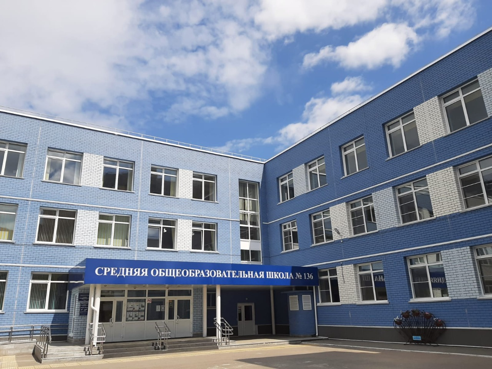

Барнаул - город в России и столица Алтайского Края. Население города составляет чуть более 600 тысяч человек.

Барнаул - город в России и столица Алтайского Края. Население города составляет чуть более 600 тысяч человек.

Барнаул основался в 1730-х годах и развивался как посёлок при сереброплавильном заводе Акинфия Демидова. У города Барнаул очень много достижений в различных сферах.
Лучшая школа в городе - МАОУ “Средняя общеобразовательная школа №136”
